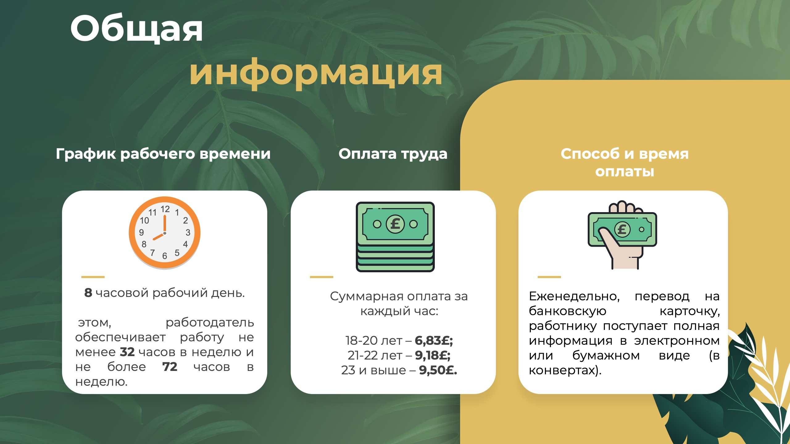

Великобритания
Общие сведения о стране
Официальное название: Соединенное Королевство Великобритании и Северной Ирландии, The United Kingdom of Great Britain and Northern Ireland.
Столица: Лондон.
Официальный язык: Английский.
География: Государство, расположенное на Британских островах (остров Великобритания и северо-восточная часть острова Ирландия, Нормандские острова, Оркнейские острова, Шетландские острова, а также большое количество мелких островов и архипелагов) и отделенное от материка проливом Ла-Манш. Омывается Атлантическим океаном и его морями.
Время: Часовой пояс UTC+0. Переход на летнее время осуществляется в последнее воскресенье марта в 02:00, а на зимнее – в последнее воскресенье октября в 03:00. Разница во времени между Великобританией и Бишкеком составляет 5 часов в летний период и 6 часов в зимний.
Нерабочие праздничные дни (bank holidays):
1 января – Новый Год – New Year`s Day;
Пятница перед Пасхой – Good Friday;
Понедельник после Пасхи – Easter Monday;
Первый понедельник мая – Майский праздник – Early May bank holiday;
Последний понедельник мая – Праздник Весны – Spring bank holiday;
Последний понедельник августа — Летний выходной день – Summer bank holiday;
25 декабря – Рождество – Christmas Day;
26 декабря – День рождественских подарков и второй день Рождества – Boxing Day.
Дополнительно в Северной Ирландии:
17 марта – День Святого Патрика – St Patrick’s Day;
12 июля – Годовщина битвы при реке Бойн (День оранжистов) – Battle of the Boyne (Orangemen’s Day);
А в Шотландии:
30 ноября – День Святого Андрея – St Andrew’s Day.
Денежная единица: Фунт стерлингов, обозначение – £. 1 фунт равен 100 пенсам. В обращении имеются банкноты достоинством 5, 10, 20 и 50 фунтов, а также монеты в 1, 2, 5, 10, 20 и 50 пенсов, 1 и 2 фунта. Обменять иностранную валюту на фунты можно в любом отделении банка или в обменных пунктах. Как правило, при себе необходимо иметь паспорт. Будьте бдительны при обмене валюты, так как встречаются случаи выдачи банкнот и монет, вышедших из оборота.
Климат : Умеренно морской. Основными чертами местной погоды являются неустойчивость и обилие осадков, вызванные частым прохождением циклонов и влиянием теплого течения Гольфстрим. Дождь и солнце могут сменять друг друга в считанные минуты.
Въезд, пребывание и транзитный проезд
Транспортное сообщение с Кыргызстаном: Оптимальный способ попасть в Великобританию – авиаперелет. Транзитные регулярные рейсы в Лондон осуществляют авиакомпании “Турецкие авиалинии” и “Пегасус” из Бишкека и Оша с пересадками в Стамбуле.
Въезд на автомобиле: Для ввоза в Великобританию транспортного средства для личного пользования на срок не свыше 6 месяцев необходимо заполнить таможенную форму С110 и направить ее по почте в Бюро по освобождению от налогов (National Import Reliefs Unit). При себе следует иметь ее копию. Декларировать автомашину на границе не требуется. Основным условием беспошлинного ввоза автомашины в Великобританию является ее вывоз до истечения указанного срока. Студенты или лица, работающие по контракту, могут беспошлинно ввозить транспортное средство на период своей учебы либо контракта, после чего его необходимо вывезти. При выезде из страны копию формы следует отправить в вышеупомянутый орган. Ввозимое транспортное средство должно также иметь страховой полис, действующий на территории Великобритании. Ввоз бензина для личного пользования ограничен объемом бака автомашины.
Визовые вопросы : Для въезда на территорию Великобритании гражданам Кыргызской Республики необходима виза. С актуальной информацией о категориях виз и порядке их оформления можно ознакомиться на британском правительственном ресурсе https://www.gov.uk/browse/visas-immigration.
Транзитная виза : Необходима в случае прохождения пограничного контроля (выход за территорию аэропорта) с целью сделать пересадку в аэропорту или покинуть транзитную зону для личных нужд на срок не более 48 часов во время пересадки в том же аэропорту. Транзитная виза не требуется, если срок пересадки на территории Великобритании не превышает 24 часа, выход за территорию аэропорта не осуществляется и транзитная зона не пересекается. Тем не менее, учитывая наличие нескольких международных аэропортов и терминалов, при планировании перелета через Лондон рекомендуется заранее осведомиться о необходимости оформления транзитной визы.
Важно : При транзите необходимо иметь билет на следующий рейс. Багаж, как правило, выдается за пределами транзитной зоны, и в таком случае наличие транзитной визы обязательно.
Поездки с детьми : Для детей, путешествующих с одним из родителей или без родителей, при получении британской визы необходимо нотариально заверенное согласие другого родителя либо обоих родителей, соответственно.
Действительность паспорта : Документы для оформления британской визы принимаются при условии, что срок действия паспорта истекает не ранее, чем через 6 месяцев со дня подачи заявления на визу.
Таможенный контроль : Спиртное и сигареты. Из страны, не являющейся членом ЕС, в Великобританию беспошлинно можно ввезти следующие количество табачных изделий и спиртного:
200 сигарет или 100 сигарилл, или 50 сигар, или 250 г табака;
1 л спиртных напитков крепостью свыше 22 градусов или 2 л крепленого вина до 22 градусов;
Прочее: Подлежат декларированию наличные денежные средства, эквивалентные сумме 10 тысяч евро и выше (включая дорожные чеки и другие безналичные платежные средства), а также личные вещи, в том числе ювелирные изделия, драгоценности и т.д., стоимостью свыше 4000 евро.
Предметы, запрещенные к ввозу/вывозу: Военная амуниция, взрывчатые вещества, огнестрельное оружие, нелицензированные медикаменты, порнографические материалы, пиратская продукция, а также мясо, рыба, мед, яйца, молоко и некоторые другие продукты животного происхождения запрещены к ввозу и вывозу из Великобритании. При этом для личного потребления упомянутые продукты питания могут быть ввезены в ограниченном количестве.
Санитарный и фитосанитарный контроль: Ввозимые в страну растения подразделяются на три категории.
1. Запрещенные к ввозу в страну (в основном, это касается всех корневых растений, привезенных из стран, не входящих в ЕС).
2. Растения, которые должны иметь сертификат компетентного органа страны экспорта. К ним относятся разрешенные для ввоза корневые растения, фруктовые деревья, семена подсолнуха, срезанные цветы хризантем и герани (из стран, не входящих в ЕС).
3. Разрешенные для ввоза в страну растения – семена цветов, большинство срезанных цветов, а также овощи, предназначенные для потребления, кроме картофеля. Санитарный контроль на погранпереходах Великобритании не осуществляется.
Ветеринарный контроль: Ввозимые в страну животные должны иметь соответствующую лицензию и подлежат помещению на карантин. Домашние питомцы, имеющие ветеринарный сертификат и вживленный под кожу специальный микрочип, освобождаются от прохождения карантина. Для ввоза птиц требуется санитарная лицензия на их импорт.
Безопасность
Террористические угрозы : Власти Великобритании оценивают уровень террористической угрозы по стране как существенный (substantial).
Преступность: С развитием экономического и миграционного кризиса в стране отмечается увеличение уличной преступности: от краж личного имущества до участившихся в последние годы нападений с ножом. Параллельно с этим растет и количество киберпреступлений таких, как хакерские атаки с целью похищения персональных данных, а также интернет-торговля фальшивыми документами, подделка и использование похищенных в сети банковских карт и т.д.
Безопасность туристов: Практически в каждом городе есть опасные районы, которые туристам следует избегать. Рекомендуем проявлять бдительность, соблюдать меры личной безопасности в местах массового скопления людей, а также в общественном транспорте. Высокое криминогенное напряжение в столице наблюдается в центральном районе Вестминстер и в Ист-энде (бывший рабочий район).
На портале британской полиции «Карта преступности» (http://maps.met.police.uk/) опубликованы карта и аналитические таблицы уровня преступности, перечень самых распространенных правонарушений в каждом из регионов страны, а также телефоны горячих линий.
Опасности для здоровья, типичные болезни: Санитарно-эпидемическая обстановка в стране удовлетворительная. В Великобритании осуществляется государственный контроль качества и безопасности пищевых продуктов.
В силу влажного климата сезон цветения растений в Великобритании отличается обильностью и длительностью, что может вызвать обострение аллергических заболеваний.
Медицинская помощ ь: Неотложная медицинская помощь оказывается бесплатно.
Работники скорой помощи и госпиталя, как правило, не спрашивают паспорт заболевшего и/или карту медицинского страхования. При необходимости бесплатно предоставляются услуги переводчика.
Аптеки: Большинство аптек в Великобритании работает до 18:00. На входной двери каждой аптеки, как правило, указан адрес ближайшей круглосуточной дежурной аптеки.
Ветеринарная помощь: Ветеринарные клиники достаточно распространены, однако большинство из них работает только в будние дни до 18:00.
Полезные телефоны: По всей территории Великобритании действует объединенный номер пожарной службы, скорой медицинской помощи и полиции — 999.
Дорожное движение
В Великобритании левостороннее дорожное движение. Дорожная разметка отличается высокой информативностью, что существенно помогает всем участникам дорожного движения. Обгон выполняется справа от обгоняемого транспортного средства. На перекрестках, включая круговые, преимущество имеют транспортные средства, которые находятся справа от вас. В населенных пунктах при отсутствии ограничительных знаков допустимая скорость до 30 миль в час, на других дорогах – не более 60 миль в час, на автострадах и других дорогах с двумя и более полосами движения в одном направлении – до 70 миль в час.
Парковка: Двойная сплошная линия дорожной разметки вдоль края проезжей части означает, что парковка в данном месте запрещена круглосуточно. На одинарной желтой линии парковка регулируется специальными уведомлениями и, как правило, разрешается в нерабочее время. Оплата за парковку в специально отведенных местах производится по телефону или с помощью специальных автоматов, выдающих водителю талон с отметкой о времени стоянки, который надо разместить на виду под лобовым стеклом автомобиля (Pay and Display). Большинство автоматов принимает банковские карты и монеты достоинством 20, 50 пенсов и 1 и 2 фунта стерлингов.
Платные парковки в Великобритании не всегда являются охраняемыми. Бесплатные парковки расположены в основном у больших магазинов или далеко от центра города, и оставлять на них автомобиль разрешается не более чем на два часа. Во многих местах встречается дорожный знак с надписью Residents parking. Он означает, что в данном месте парковка разрешена только для граждан, постоянно проживающих поблизости и имеющих особое разрешение на парковку.
Дорожный налог: Въезд в центр Лондона с 7:00 по 22:00 платный. Пошлина (Congestion Charge) составляет 15 фунтов стерлингов и оплачивается в торговых точках, имеющих знак «pay point».
Водительское удостоверение: На территории Великобритании допускается использование международного водительского удостоверения Кыргызской Республики в течение 12 месяцев с даты въезда в страну.
Общественный транспорт
Метро: Самый удобный способ передвижения в центре Лондона. Обозначается как красный круг с надписью «Underground». Для проезда можно приобрести обычные бумажные билеты для одноразового или суточного пользования, пластиковые карты Oyster, а также использовать банковскую карту (прикладывать к валидатору вместо карты Oyster). Карты дают право проезда не только в метро, но и в автобусах, легком метро (DLR), трамваях, а также пригородных поездах (London Overground и National Rail) в пределах обозначенных на картах зон Большого Лондона. Ими также можно оплатить и пользование канатной дорогой Emirates Air Line (скидка составит 25%) и городскими речными трамвайчиками Thames Clippers (скидка – 10%). Карты Oyster действуют по принципу Pay as you go ("Плати, когда едешь"). В метро, легком метро и поездах билеты следует прикладывать к валидатору до начала поездки и сразу по ее окончании, а автобусах и трамваях – только при посадке. В наземном транспорте валидаторы находятся в салонах автобусов и трамваев. В метро и пригородных поездах они установлены на станциях.
Такси: Такси разделены на 3 категории. «Черные кэбы» (Black cabs) относительно дороги и представляют собой скорее туристическое развлечение. «Миникэбы» (minicabs) могут взять не 5 пассажиров, как «черные кэбы», а только 4 и являются более дешевым способом перемещения по городу. Заказы принимаются только по телефону, работают без счетчиков, поэтому о тарифе стоит осведомиться заранее. Третий и самый популярный вариант – сервис такси «Uber», принимающий заказы через мобильное приложение.
Транспортное сообщение между аэропортом «Хитроу» и центром Лондона: Стоимость проезда от аэропорта до центра Лондона на «кэбе» (на такси) составит около 50 фунтов. Время в пути – 40 минут. Стоянка такси находится рядом с выходом из аэропорта. В центр Лондона также ходят автобусы аэропорта (А1 к вокзалу «Виктория» и А2 к вокзалу «Юстон»). Стоимость проезда около 10 фунтов. Билеты можно приобрести в здании аэропорта или в автобусе. Автобусы отправляются каждые 20 минут. Кроме того, линия метро «Пикадилли лайн» идет от «Хитроу» до центра Лондона и связывает разветвленную подземную сеть метро. Стоимость проезда в центр 5 фунтов за одну поездку. Поезда отправляются каждые 5 минут, время в пути около часа. В центр Лондона на ж/д вокзал «Паддингтон» каждые 20 минут ходят скоростные поезда, время поездки 15 минут, стоимость от 22 фунтов.
Контроль выезда из Великобритании
В целях противодействия нарушениям визового режима, незаконной иммиграции и выявления лиц, подозреваемых в совершении преступлений действует система контроля за выездом из Великобритании всех пассажиров, следующих любыми видами транспорта. Паспорта выезжающих из Великобритании сканируются представителями коммерческих перевозчиков, соответствующая информация передается в МВД Великобритании. В связи с этим в Великобритании не исключаются задержки при посадке в пунктах выезда, прежде всего, паромными переправами, а также железнодорожным транспортом через Евротоннель.
КАРАНТИННЫЕ ОГРАНИЧЕНИЯ
Дополнительные медицинские документы (ПЦР-тест, сертификат о вакцинации, PLF) для въезда в Великобританию с 18 марта 2022 года больше не требуются.
Прочее
Обед в ресторане среднего класса: Перед тем, как зайти в ресторан, всегда полезно заглянуть в меню, обязательно вывешенное недалеко от входа. Во многих ресторанах можно расплачиваться кредитными карточками. Полезно осведомиться заранее, включены ли чаевые в цены, указанные в меню, обычно чаевые составляют 10-15 % от заказа. Многие рестораны располагают комплексными меню с фиксированными ценами. Средняя стоимость обеда или ужина из трех блюд в обычном ресторане может колебаться от 25 до 40 фунтов с человека, но в некоторых маленьких семейных ресторанчиках можно найти цены несколько ниже.
Номер в гостинице среднего класса в Великобритании: Средняя стоимость проживания в 3-звездочной гостинице составляет 70-80 фунтов стерлингов за ночь.
Часы работы продовольственных и промтоварных магазинов: Большинство магазинов в Великобритании открыто с 09.00 до 18.00 с понедельника по субботу. Супермаркеты в больших городских районах часто открыты и по воскресеньям с 12.00 до 17.00.
Мобильная связь: Мобильная связь в Великобритании бывает двух видов: «Pay as you go» и так называемый «Contract». В первом случае подключение осуществляется без подписания контракта, баланс пополняется с помощью пластиковых карт. Во втором случае подписывается, как минимум, 12-месячный контракт и звонки оплачиваются ежемесячно. Местные операторы мобильной связи – T-Mobile, Vodafone, Orange, O2, Three, Virgin.
Банкоматы и кредитные карты: Банкоматы можно встретить возле каждого отделения любого банка, во всех крупных торговых центрах и магазинах.
Возврат НДС: Право на возврат НДС на товары, приобретенные в Великобритании и вывозимые за ее пределы, имеют иностранные граждане, не проживающие постоянно в пределах Великобритании или Евросоюза и покидающие Евросоюз не позднее, чем через три месяца после приобретения товаров, и предоставляющие товары и подтверждения о покупке товаров в виде чеков и формы возврата НДС таможенной службе в точке выезда из Евросоюза. Право распространяется также на иностранных граждан, не проживающих постоянно в какой-либо из стран Евросоюза, которые находятся в Великобритании как студенты или работники, если они собираются выехать за пределы Евросоюза на срок не менее 12 месяцев, если они выезжают из Евросоюза (в частности, из Великобритании) не позднее, чем через 3 месяца после приобретения товаров, и ближайший пункт назначения находится за пределами ЕС; и предоставляющие товары и подтверждения о покупке товаров в виде чеков и формы возврата НДС таможенной службе в точке выезда из Евросоюза.
НДС составляет 20 %, однако возвращается не более 13 %. Помимо этого при оформлении возврата НДС в аэропортах снимают комиссионный сбор, в пределах 2 %.
Товары, на которые распространяется право возврата НДС, должны быть приобретены в магазинах, работающих по схеме VAT Retail Export Scheme (розничной продажи товаров без НДС).
Электрическое напряжение: 230 В, 50 Гц. Розетки – трехконтактные, с заземлением. Адаптер можно получить в гостинице или приобрести в магазине.
Британская система мер: В Великобритании официально принята метрическая система измерения. При этом параллельно с ней в ходу и имперская система мер: мили (1 миля = 1,6 километра), пинты (1 пинта = 0,57 литра) и т.д.
